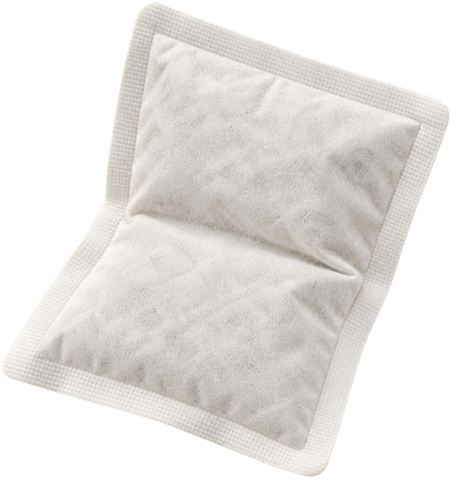
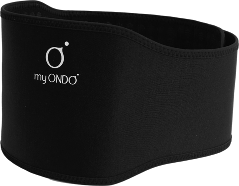

밴드가 미지근한 이유
제품이 뜨거운 온열용품은 피부 겉에서 멈추고,
마이온도는 피부 속 심부층까지 내려갑니다.
↓ 천천히 내려 보세요

핫팩·찜질기제품이 뜨거움

마이온도밴드는 미지근
핫팩·찜질기
제품이 뜨겁고마이온도
밴드는 미지근,그래서 처음 둘렀을 때 밴드가
미지근하게 느껴지는 건 정상이에요.
체온 자체를 끌어올리는 중이니까요.
* 심부 전달은 브랜드 안내 기준이며, 체감 시점과 정도는 사람마다 다릅니다. 그림은 이해를 돕기 위한 개념도입니다.